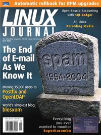

Shutdown Archive web server
Search:
Linux Journal
Issue #121/May 2004

Features
Transactions and Rollback with RPM
by James Olin Oden
Learn to back out problem upgrades, and you'll be saving your “swear jar” money for cold beverages.
HEC Montréal: Deployment of a Large-Scale Mail Installation
by Ludovic Marcotte
If you thought you had mail problems, try 600,000 spams a day.
SPF, MTAs and SRS
by Meng Weng Wong
Spam “from” you? Gone. Spam forged from other SPF-using domains? Gone. Do we have your attention yet?
Policy Routing for Fun and Profit
by David Mandelstam and Nenad Corbic
A bargain Net connection gets expensive over its traffic limit. Routing mastery will keep bills in check and Net performance snappy.
Indepth
The Linux-Based Recording Studio
by Aaron Trumm
Fill in the parts between the mic and the Linux box, and make records the way you want.
Using SQL-Ledger for Your Business
by David A. Bandel
If the proprietary accounting system is the last obstacle to your all-Linux office, you just bought the right magazine.
Automating Tasks with Aap
by Bram Moolenaar
Do what make can, and more, with the next-generation software build tool.
How to Build LSB Applications
by Stuart R. Anderson
Use these simple tools to make your app binary-compatible with the leading distributions.
Embedded
Shielded CPUs: Real-Time Performance in Standard Linux
by Steve Brosky
Add another tool to the real-time toolbox—simply dedicate one processor to your most critical task.
Toolbox
At the Forge
Blosxom
by Reuven M. Lerner
Kernel Korner
Using DMA
by James Bottomley
Cooking with Linux
Eye Candy for Admins?
by Marcel Gagné
Columns
EOF
Open Legal Research
by Pamela Jones
Review
Practical Programming in Tcl and Tk
by Marty Leisner
Departments
From the Editor
Letters
upFRONT
On The Web
Best of Technical Support
New Products
Archive Index
Shutdown Archive web server
Search:
Copyright © 1994 - 2018
Linux Journal
. All rights reserved.